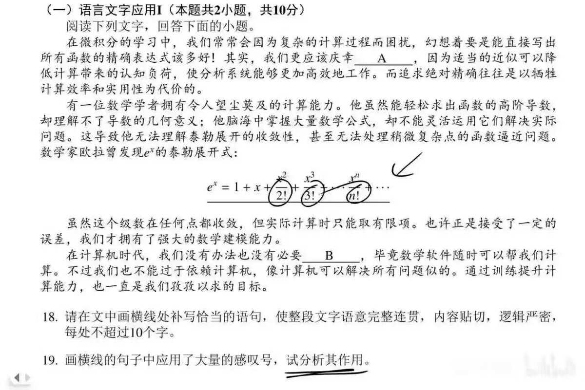

Aoi M
@aoim33
参考答案：
表达效果上：从语文修辞的角度看，当这些公式被嵌入一段论述性的文字中时，一连串的阶乘符号在视觉上形成了排比与强调的效果。它们直观地展示了展开项的增加和分母的迅速增大，形象地印证了前文”实际计算时只能取有限项”这一观点，使抽象的数学规律变得可视可感。同时，这一长串严谨而优美的公式，也传递出数学家发现这一规律时的惊叹与赞美之情，仿佛在感叹数学内部蕴含的如此和谐而强大的秩序
因此，这些”感叹号”既是严谨的数学语言，又在文本语境中起到了强化论述、化抽象为具体的表达效果
评价为不会说话可以不说
